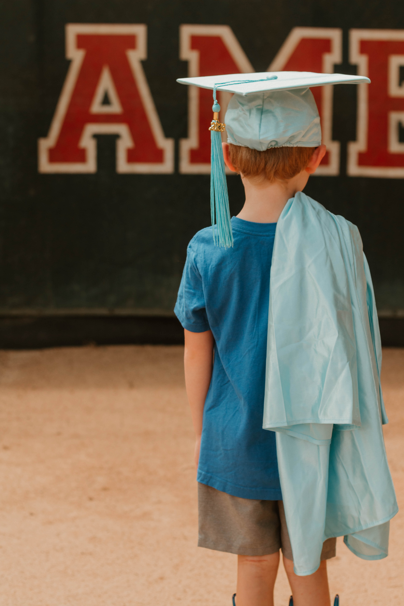
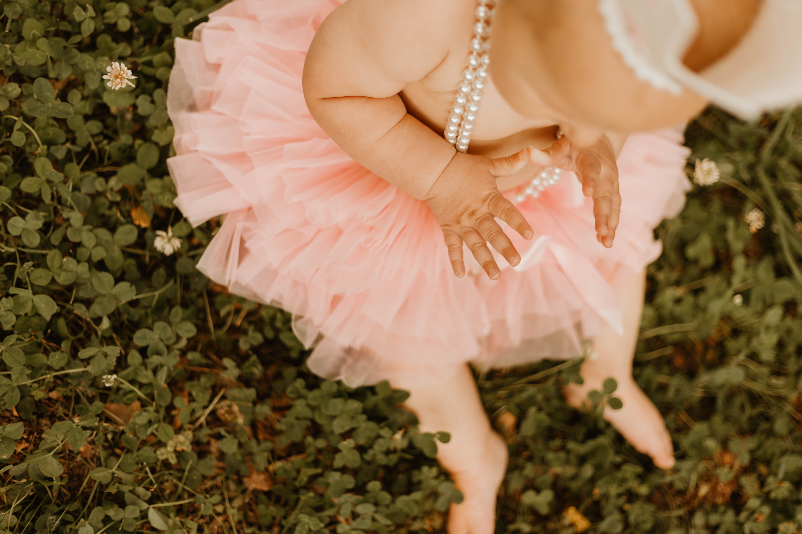
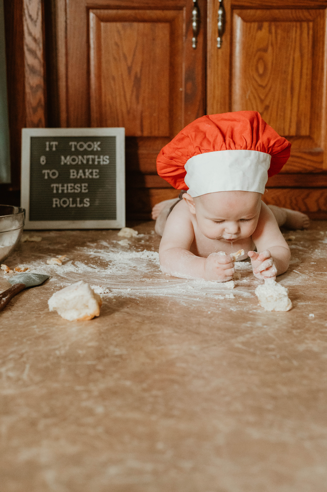
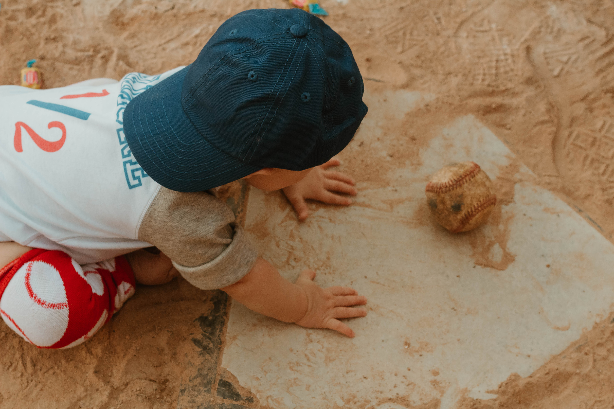
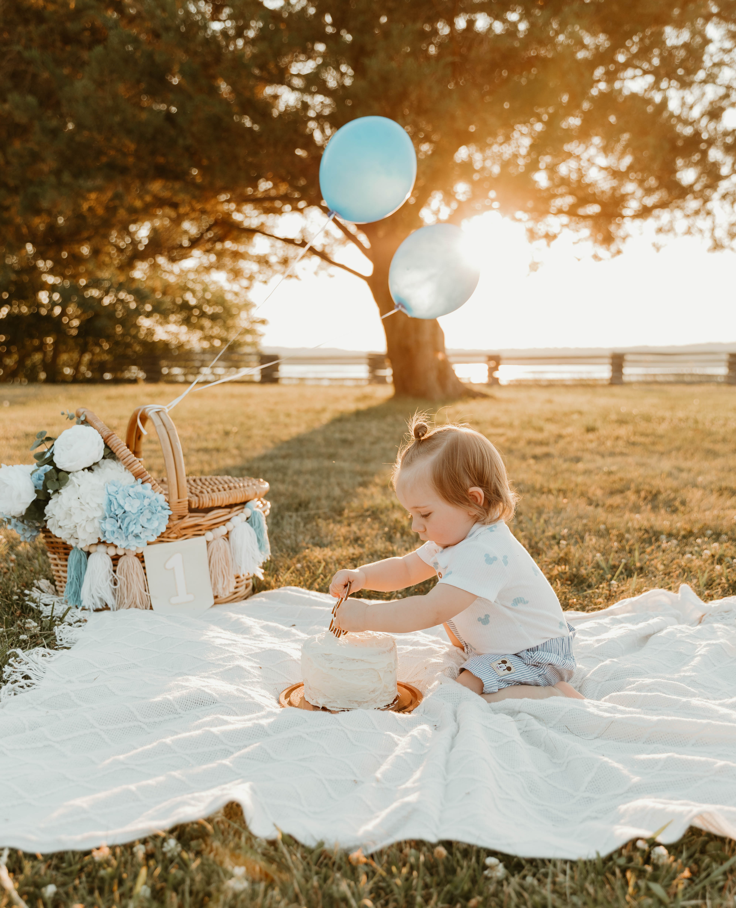

"There is a time for everything, and a season for every activity under the heavens." -Ecclesiastes 3:1
From first smiles to first birthdays, every stage deserves to be remembered.
These sessions are designed to capture the personality, growth, and special moments that make each age unique. They are relaxed, child-led and focus on genuine expressions and natural interactions that create images you'll treasure for years to come.
Each session will be thoughtfully planned with plenty of time for smiles, cuddles, and play to capture your child's unique personality. Together, we'll preserve the moments that pass by so quickly.
Back to Portfolio




© 2026 Grace & Olive Lens